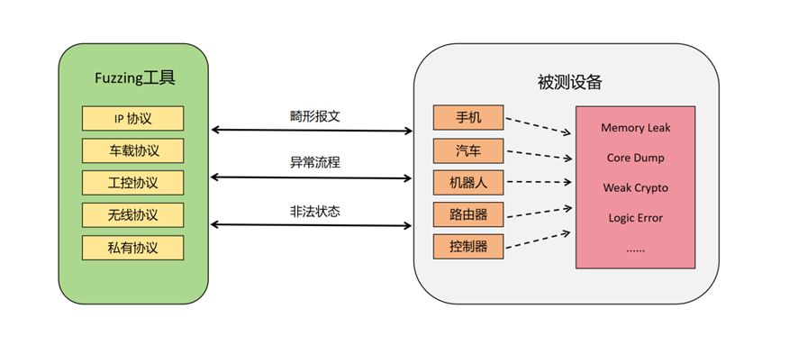

模糊测试简介
官方译名叫做模糊测试（又叫Fuzzing, Fuzz Testing），即是用“模糊”的输入对程序进行测试，找到程序漏洞、错误的一种技术。所谓的模糊，其实就是输入的不确定。
模糊测试是一种介于完全的手工渗透测试与完全自动化测试之间的安全性黑盒测试。充分利用机器的优势：随机生成和发送数据，同时引入安全专家的安全性经验。
Fuzzing模糊测试，是一种自动化测试技术，其目标是通过向软件应用或系统组件注入大量随机或者特定的数据，以发现潜在的漏洞和安全问题。Fuzzing可以用于测试各种软件，包括操作系统、网络协议、编程库、应用程序等。
Fuzzing技术

技术特点
- 自动化：Fuzzing是一种自动化测试技术，不需要人为干预。测试人员只需定义一些输入的范围和规则，Fuzzing工具就能够生成并发送大量测试用例。
- 精准性：Fuzzing能够针对协议模型的特点对相关报文域做智能化畸变，同时辅以随机畸变能够生成更加精准的测试用例，模拟了实际攻击者可能使用的各种输入。这使得Fuzzing能够探测到开发者可能没有考虑到的边缘情况和异常情况。
- 普适性：Fuzzing可以用于测试各种类型的软件和系统，包括但不限于操作系统、网络协议、编程库、浏览器、数据库等。这种通用性使得Fuzzing成为发现广泛安全问题的有效手段。
- 高效性：Fuzzing可以在短时间内生成大量测试用例，从而大大提高测试的效率。通过自动产生输入，Fuzzing能够覆盖大量的代码路径，增加发现漏洞的概率。
技术优势
- 发现未知漏洞：Fuzzing能够发现未知漏洞，包括开发者没有预料到的边界情况和异常输入，从而帮助提高软件的鲁棒性。
- 高覆盖率：协议Fuzzing基于标准模型生成“聪明”的测试用例，具有极高的协议和代码覆盖率，能够突破多种检测规则深入测试程序的各个部分。
- 持续集成：Fuzzing可以集成到持续集成（CI）和持续部署（CD）流程中，使得漏洞能够在早期被发现和修复，提高软件开发的整体安全性。
- 节约成本：与手动测试相比，Fuzzing可以更高效地发现漏洞，并且可以在短时间内完成大规模的测试，从而降低了测试的成本。
- 应对复杂性：Fuzzing可以处理复杂的软件系统和协议，即使在无法获取源代码或了解内部实现的情况下，也能进行有效的测试。
模糊测试执行过程5个阶段
- 确定输入向量
- 原则：一切向测试目标程序输入的数据都应该被认为是危险的，所有输入向量都可能是存在潜在安全风险的模糊测试变量。
- 生成模糊测试数据
- 方式1：通过预先确定的值，使用基于已存在的数据通过算法将其变异，生成新的测试数据
- 方式2：通过分析被测试应用程序及其适用的数据格式，动态生成测试数据
- 重点：模糊测试数据生成自动化
- 执行模糊测试
- 重点：模糊测试执行自动化
- 监视异常
- 重点：监控测试过程中的异常和错误，且能复现。
- 根据被测系统的状态判断是否存在潜在的安全漏洞
- 目标：判断是Bug 还是 可利用的安全漏洞
- 方法1：通过源代码做代码审计；通过逆向工程方式用代码审计找漏洞
- 方法2：尝试抓取客户端和服务端之间的通信数据、通信协议，然后根据前面的信息手工构造协议数据，对目标发包，尝试找到可能的漏洞。
Term
Blind Fuzzing
其实就是指黑盒模糊测试。盲目模糊测试,指用最简单的方法，仅向程序或嵌入式设备发送随机数据，直到发生崩溃、响应延迟或配置更改等异常行为。
黑盒模糊器可以从头开始生成输入，或者依赖有效输入文件的静态语料库来进行基础突变。
代表工具boofuzz
使用场景： - 对于相同的输入，目标是不确定的。 - 目标很慢。 - 输入格式复杂或高度结构化（例如 JavaScript 等编程语言）。
例如，浏览器 DOM 模糊器可能会生成针对 Chrome 等目标能运行的 HTML 输入，而无需任何覆盖反馈来指导其突变。
Coverage Guided Fuzzing
其实就是指灰盒模糊测试。覆盖引导模糊测试（也称为灰盒模糊测试）使用程序检测来跟踪馈送到模糊目标的每个输入所达到的代码覆盖率。
代表工具AFL，libFuzzer
使用场景： - 目标是独立的。 - 目标是确定性的。 - 目标每秒可以执行数十次或更多次（最好是数百次或更多）。
例如，二进制格式（例如图像格式）解析器非常适合于此。
模糊测试整体方案
Google开源了基于Google cloud的方案：
- OSS-Fuzz - 开源软件的持续模糊测试。
- ClusterFuzz - 一个可扩展的模糊测试基础设施，可以发现软件中的安全性和稳定性问题。Google 使用 ClusterFuzz 对所有 Google 产品进行模糊测试，并作为 OSS-Fuzz 的模糊测试后端。
REF
- Fuzzing: a survey翻译版
- 《模糊测试：强制性安全漏洞发掘》 - 经典书籍，需要一定的漏洞挖掘基础，而且确实年代久远。
- The Fuzzing Book - 用Python代码来演示各种Fuzzing技术，英文原版网站可在线学习，也能搜到中文翻译版。
- Fuzzingbook学习指南 - 系列文章，目前还在连载中。
- 对5G协议的漏洞挖掘研究
- Coverage guided vs blackbox fuzzing
- Fuzzing for Software Security Testing and Quality Assurance 2018
- AFL